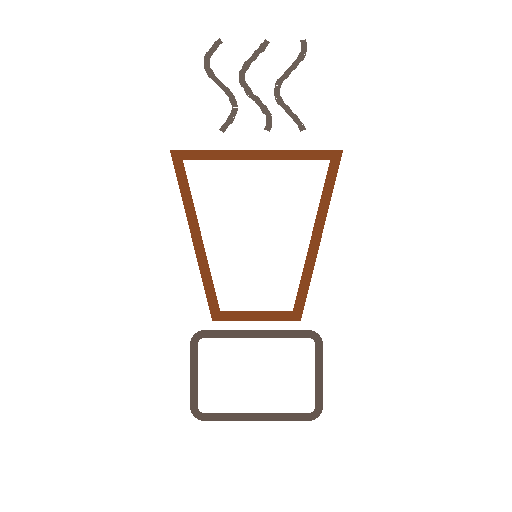

Koffeinfrei & für KinderKoffeinfrei & für Kinder
Cascara Warm
Teeartig aus der Kaffeekirsche.
⏱5 Min.
📶Einfach
☕1 Portion
🫘Zutaten
- Cascara (getrocknete Kaffeekirschschale)8 g
- Wasser, heiß (nicht kochend)250 ml
📋Zubereitung
- 1Cascara mit heißem, nicht kochendem Wasser übergießen.
- 24–5 Minuten ziehen lassen.
- 3Abseihen und pur genießen.
💡
Kaffee für dieses Rezept entdeckenLeNoKo Shop
→
Kaffee-Tipp
unsere Cascara schmeckt fruchtig-teeartig nach Hibiskus und Dörrobst.